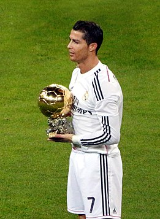

Cristiano Ronaldo dos Santos Aveiro was born on 5 February 1985 in the São Pedro parish of Funchal, the capital of the Portuguese island of Madeira, and grew up in the nearby parish of Santo António. He is the fourth and youngest child of Maria Dolores dos Santos Viveiros da Aveiro, who worked as a cook in the hospitality industry and a cleaning woman, and José Dinis Aveiro, a municipal gardener at the Junta de Freguesia of Santo António and part-time kit man for football club Andorinha. His great-grandmother on his father's side, Isabel da Piedade, an African woman, was born in the island of São Vicente, in what was then Portuguese Cape Verde, and moved to Madeira Island at 16. He has one older brother, Hugo, and two older sisters, Elma and Liliana Cátia "Katia". He was named after actor and U.S. President Ronald Reagan, whom his father was a fan of. His mother revealed that she wanted to abort him due to poverty, his father's alcoholism, and having too many children already, but her doctor refused to perform the procedure, as abortions were illegal in Portugal at that time. Ronaldo grew up in an impoverished Roman Catholic home, sharing a room with all his siblings.
As a child, Ronaldo played for Andorinha from 1992 to 1995,where his father was the kit man,and later spent two years with Nacional. In 1997, aged 12, he went on a three-day trial with Sporting CP, who signed him for a fee of £1,500.He subsequently moved from Madeira to Lisbon to join Sporting CP's youth system.By age 14, while struggling with his school duties and responsibilities in Escola EB2 de Telheiras, his school in the Telheiras area of Lisbon, Ronaldo believed he had the ability to play semi-professionally and agreed with his mother and his tutor at Sporting CP, Leonel Pontes,to cease his education to focus entirely on football.With a troubled life as a student and living in Lisbon area away from his Madeiran family, he did not complete schooling beyond the 6th grade.While popular with other students at school, he had been expelled after throwing a chair at his teacher, who he said had "disrespected" him.One year later, he was diagnosed with tachycardia, a condition that could have forced him to give up playing football.Ronaldo underwent heart surgery where a laser was used to cauterise multiple cardiac pathways into one, altering his resting heart rate.He was discharged from the hospital hours after the procedure and resumed training a few days later.[35] In 2021, Cristiano Ronaldo's mother, Dolores Aveiro, stated in an interview for Sporting CP's official television channel (Sporting TV) that her son would be a bricklayer if he hadn't become a professional football player
On his home soil, after moving through the youth and under-21 ranks, Ronaldo had made his first appearance for Portugal’s full national team against Kazakhstan in August 2003 (four days after his debut for United). He was a key player in Portugal’s fourth-place finish at the 2006 World Cup and became the full-time captain of the national team in 2008. In 2012 his stellar play led Portugal to the semifinals of the European Championship, where his team was eliminated by rival Spain in a match that was decided by a penalty kick shoot-out. Ronaldo came into the 2014 World Cup hot off of his second world player of the year win, but his play at the tournament was spotty, and the entire Portugal team struggled during a group-stage elimination. In 2016 he helped Portugal win the European Championship, the country’s first major international tournament title, although he only played sparingly in the final because of a knee injury that he had sustained early in the match. Ronaldo played brilliantly at the 2018 World Cup, scoring four goals in four games as Portugal advanced to the knockout round only to lose its first match of that stage to a strong defensive Uruguay side. Four years later Ronaldo became the first male player to score at five different World Cups. However, he was not part of the starting lineup for several games, and Portugal’s 2022 World Cup ended with a loss in the quarterfinals. A versatile attacker, Ronaldo is capable of playing on either wing as well as through the centre of the pitch,and, while ostensibly right-footed, is very strong with both feet.Tactically, Ronaldo has undergone several evolutions throughout his career. While at Sporting and during his first season at Manchester United, he was typically deployed as a traditional winger on the right side of midfield, where he regularly looked to deliver crosses into the penalty area. In this position, he was able to use his pace and acceleration, agility and technical skills to take on opponents in one-on-one situations. Ronaldo became noted for his dribbling and flair, often displaying an array of tricks and feints, such as the step overs and so-called 'chops' that became his trademark; he has also been known to use the flip-flap.
In his first season at Juventus, Ronaldo continued to play in a variety of different attacking roles under manager Massimiliano Allegri, depending on whom he was partnered with. While he had occupied an increasingly offensive role in his final years at Real Madrid, at times he functioned in a free role at Juventus, either as a lone striker or in his trademark role on the left wing, in a 4–2–3–1 or 4–3–3 formation, in which he often switched positions with Mario Mandžukić. In this role, he was also given licence to drop deep or even out wide onto the right flank to receive the ball, and be more involved in the build-up of plays; as such, aside from scoring goals himself, he began to take on opponents and create chances for other players with greater frequency than he had in his final seasons with Real Madrid. Off the ball, he was also capable of creating space for teammates with his movement and attacking runs into the box, or finishing off chances with his head or feet by getting onto the end of his teammates' crosses.On occasion he also played in an attacking partnership alongside Mandžukić in a 4–3–1–2, 4–4–2, or 3–5–2 formation.He continued to play a similar role in his second season with the club under manager Maurizio Sarri.[518]
Ronaldo has five living children. He first became a father to a son, who was born on 17 June 2010 in the United States.He has full custody of the child and has not publicly revealed the identity of the mother per an agreement with her.[634][635] In January 2015, Ronaldo's five-year relationship with Russian model Irina Shayk ended.Ronaldo became a father to twins,born on 8 June 2017 in the United States via surrogacy. He is currently in a relationship with Argentine-born Spanish model Georgina Rodríguez, who gave birth to a daughter on 12 November 2017.The couple expected a pair of twins in 2022. The male twin died during childbirth while the female twin survived.In January 2023, after Ronaldo moved to Saudi Arabia with his family having been signed by Saudi Pro League side Al Nassr, the rulers of the Muslim-leaning Kingdom made Ronaldo an exception to the rule that unmarried couples are not allowed to live together in Saudi Arabia. An unnamed Saudi lawyer told Spanish news agency EFE that "the laws of the Kingdom still prohibit cohabitation without a marriage contract", but Saudi authorities have begun to "turn a blind eye and stop prosecuting anyone, even though these laws are applied when there is a problem or a crime".Ronaldo has said that he does not drink alcohol,[624] and he received libel damages over a Daily Mirror article that reported him drinking heavily in a nightclub while recovering from an injury in July 2008. He also does not have any tattoos as he regularly donates blood and bone marrow.
He won his first trophy with Real Madrid in 2011, the 2010-11 Copa del Rey. In the next season, he won his first La Liga title with the club, the 2011-12 La Liga. In the 2012-13 season he won the Supercopa de España. In the next season, the 2013-14 season, he won his second Ballon d'Or. Then he won the Copa del Rey, and he also won his second Champions League with a record 17 goals. The following year, Ronaldo won the Ballon d'Or again, along with his second FIFA Club World Cup in December 2014. In 2016, Ronaldo won his third Champions League, and scored the winning penalty in the final against Atlético Madrid. He won his fourth Ballon d'or the next season, his second La Liga title for the first time in five years, another Champions League, and his second Club World Cup. Ronaldo's last season with Real Madrid was the 2017-18 season, where he won his fifth Ballon d'Or in 2017, and also won his fifth Champions League and scored two goals in the final against Juventus. With his third consecutive Champions League, he became the first player to win the UEFA Champions League five times.He would later go on to transfer to Juventus in July 2018. Ronaldo left the club by holding the record for being the top goal scorer in Real Madrid's history, and remaining as the only player in La Liga's history to score 30 or more goals in six consecutive seasons.